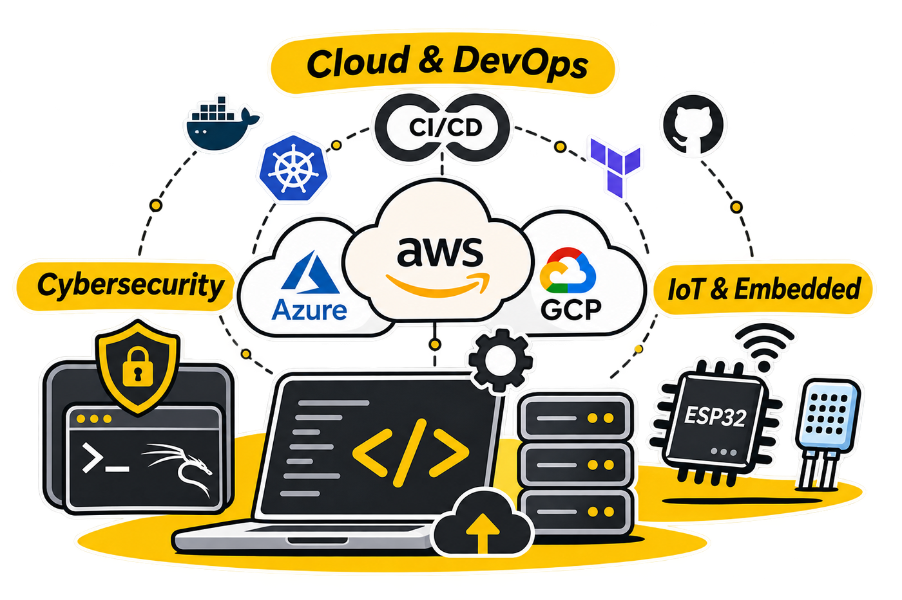

Hello, I'm Ananthu K Santhosh. A Cloud and DevOps enthusiast passionate about building secure, scalable and reliable cloud infrastructure.
Aspiring Cloud & DevOps Engineer | Cloud Security Enthusiast
I'm a final-year BCA student specializing in Cybersecurity at Marian College Kuttikkanam. My primary interests are Cloud Engineering and DevOps, with cybersecurity as an additional strength.
I completed an 8-week, 240-hour internship at IPSR Solutions Ltd, working on Linux administration, AWS and Azure cloud security, infrastructure hardening and network monitoring.
I also secured 3rd place among 264 participants in the IPSR Cloud Shift Challenge.
I'm continuously developing my practical skills through cloud infrastructure, automation, networking and security projects. I'm currently looking for entry-level Cloud and DevOps opportunities.

Cloud, networking and security work from labs, coursework and my internship period.
Marian College Kuttikkanam (Autonomous)
2024 to 2027
CGPA: 7.73
IPSR Solutions Ltd, Kottayam
May 2026 to June 2026
8 weeks, 240 hours
Tata Consultancy Services (Forage), October 2026
Webinar by Red Hat in association with IPSR Solutions Ltd, on AI and its future applications.
Issued by IPSR Solutions Ltd, May 2026. Placed 3rd among 264 participants in a competition covering Cloud Computing, DevOps and Cybersecurity, with a focus on AWS and Microsoft Azure.
Kerala, India
Email me → LinkedIn ↗ GitHub ↗ Download Resume ↓